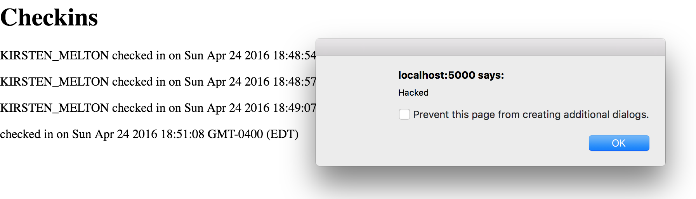
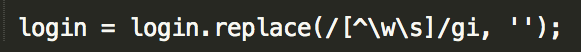
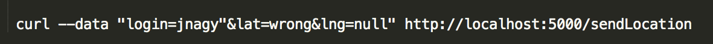
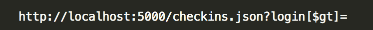

Securtiy Assesment of Historical Landmarks
Jordan Nagy 04/25/16
Introduction
This evaluation explores the security and privacy vulnerabilities of my partner's Historic Landmark page and server (Comp 20 Assignments 2 and 3, respecitvely). Their client specified that the historic landmark page will use the Google Maps API to render a map, displaying the user's location and the location of all other checkins to the page. The user's location will then be sent to the server and all of the historic landmarks within a mile will be sent back to the page. The page will then add these landmarks to the map along with the user's location and the other checkins.
I will conduct testing to evaluate these weaknesses by finding ways in which the application can be exploited to violate privacy or render it unusable.
Methods
To begin testing, I used the "black-box" method to test my partner's code without reviewing it. Then, after reviewing her code, more logic errors and vulnerabilities were found. Using curl and the url entered in the web browser, I exploited these vulnerabilities.
Since I ran her assignment locally, I had to make a slight change to connect with mongo locally as well.
Abstract of Findings
The vulnerabilites of this web application range from mild to severe; some of them can even render the application unusable. The main source of these flaws stems from too much trust in user input. Instead of trusting the user to input correct data, the application should take active measures to disablize any attempts of malicious user input. Currently, the application has little to no security and only takes precautions against a select few cases of an incorrect login input.
Issues Found
Cross-Site Scripting (XSS)
- Affects: GET '/', but the source of the vulnerability is in POST '/sendLocation'
- High: XSS opens Historic Landmarks to more serious attacks. These include, but are not limited to: redirecting the webpage to a different site, and allowing the attacker to steal data from the users of the site.
- Data submitted with curl via the POST route '/sendLocation' is not sanitized, therefore, javascript was allowed as the value for "login". This login information was stored in the database for this site (mongo), and in the home page this javascript was executed. I used curl to inject an infinte loop of popups.

This infinite loop prevented me from exiting my browser, eventually causing me to have to force quit Chrome. Although my attack was more annoying than harmful, XSS opens Historic Landmarks to more serious attacks, as mentioned above.
- A simple fix to avoid XSS is to sanitize all user input.

- I also injected some html into the page via the '/sendLocation' POST route. While also potentially harmful, this is not techinically XSS since no JavaScript is injected into the page. Sanitizing user input will also prevent HTML from being injected into the page.
Inputting Bad Data
- Affects: Assignment 2 rendering the map with user location, other checkins, and landmarks. But, the source of vulnerability is in POST '/sendLocation'.
- Moderate: Altough the bad data did not take down server, it temporarily suspends its full functionality until the database is cleared.
- Before entering login, latitude and longitude information into her database, my partner only checked to see if the login was null or an empty string, while the lat and lng remained only checked for empty strings.
- Using curl, I sent the value for the latitude as a string, and the value of longitude to null. My bad inputs were still added to the database, and I recieved the JSON with checkin data back. But, when I went to render the map, only a few checkins loaded, and none of the landmarks were present. There was also an error in the JavaScript console of "Uncaught Type Error", because the latitude and longitude were not numbers.

- An easy fix would be to also check if lat and lng are not numbers or null, before inserting them into the database. This can be done by using the not a number function, ( NaN() ) , and also checking to see if lat and lng are set to null.
Messing With Mongo
- Affects: GET '/checkins.json'
- High: Allows user to access everyone's location in JSON, and not just from their own username; a big privacy issue. Also, if the user can make queries in the database freely, they can probably manipulate the information in the database as well.
- In the query string, I searched for anything in the database greater than an empty string. This gave me the JSON with the location, login, id, and timestamp for each person that had checked in, instead of just the checkins with my username.

- There was no sanitation of what was given in the query string, therefore the user had complete access of the database. A simple fix would be to sanitize the results of the query string.
Conclusion
Vulnerabilities in with Historic Landmarks range from severe to mild issues, but all can have a significant imact on the site, and in some cases rendering it unusable. The suggestions mentioned will improve the security, but there is still more that could be done to increase security. An authentication system for the POST route, '/sendLocation', that only allowed specific users to send data would be ideal, making the user input slightly more trustworthy. But you can never trust user input, therefore, the other suggestions above will still be necessary.